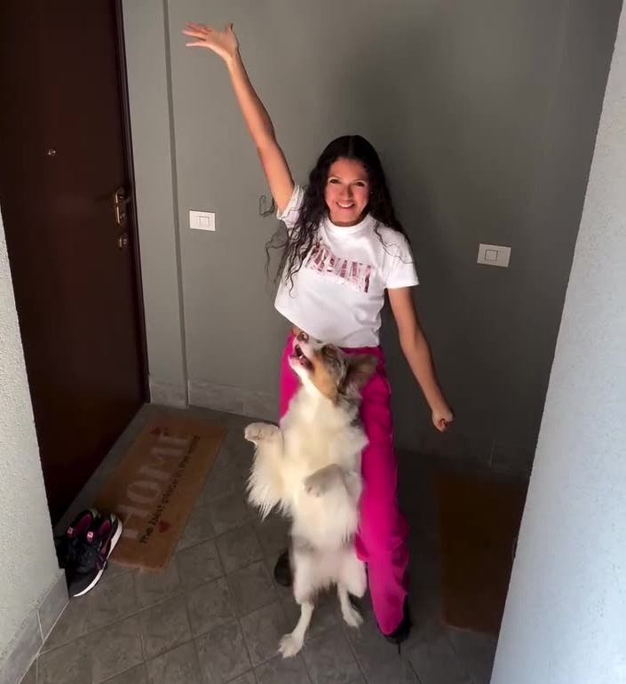

Mi chiamo Melissa Muñoz e sono un’educatrice cinofila professionista certificata. Ho scelto questa professione perché credo che ogni cane e ogni persona meritino di vivere una relazione armoniosa, basata sulla fiducia e sulla comprensione. Sono specializzata in percorsi personalizzati di educazione cinofila, pensati per accompagnare il cane nella vita quotidiana – in casa, in città e in libertà – attraverso un metodo positivo e non coercitivo.
Il mio viaggio è iniziato con il mio primo cane, che faticavo a gestire e con cui ogni giorno sembrava una battaglia.
Il mio viaggio è iniziato con il mio primo cane, che faticavo a gestire e con cui ogni giorno sembrava una battaglia. Quando è arrivato Ghiaccio, il mio secondo compagno a quattro zampe, ho capito che non volevo rivivere lo stesso caos. Ho iniziato a studiare seriamente: prima con video e risorse online, poi frequentando un corso di formazione professionale che mi ha aperto le porte del mondo dell’educazione cinofila. Da allora non ho mai smesso di formarmi: partecipo a seminari, stage e corsi per approfondire il comportamento del cane... e del suo umano.
Dopo anni di studio e pratica ho sviluppato un metodo di educazione cinofila su misura che unisce empatia, personalizzazione e supporto costante. Ho avuto il privilegio di aiutare centinaia di cani e proprietari a superare difficoltà concrete: cani che tirano, che reagiscono ai rumori, che sembrano non ascoltare o che mettono in crisi la loro famiglia. Insieme abbiamo trasformato i problemi in momenti di crescita e complicità.
Parallelamente, ho coltivato la mia passione per le discipline sportive. Con il mio cane Krystal abbiamo ottenuto importanti riconoscimenti:
Intanto, la mia attività divulgativa ha prosegue anche sui social: su TikTok ho superato i 700.000 follower, condividendo momenti reali di lavoro, trasformazioni concrete e consigli accessibili per tutti.
Ma al di là dei numeri , il cuore del mio lavoro è uno solo: aiutare le persone a capirsi con il proprio cane.
Il mio metodo unisce empatia, personalizzazione e supporto costante: dopo ogni lezione ricevi una scheda con un piano di lavoro chiaro, ogni settimana ci sentiamo con messaggi vocali WhatsApp su misura per te, rivedo i tuoi video e ti accompagno passo dopo passo...in altre parole, non vi lascio mai da soli!

Come Posso Aiutarti ?